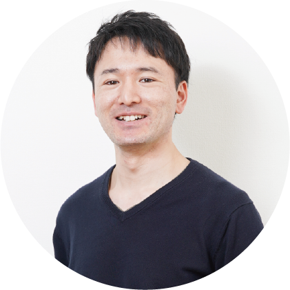
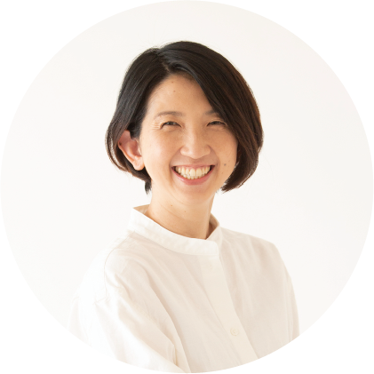
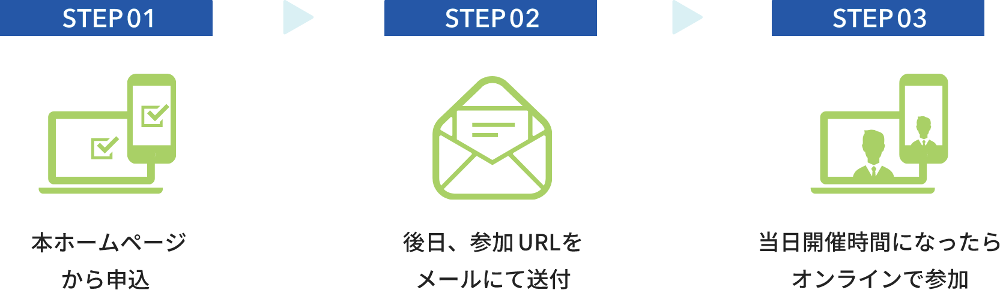
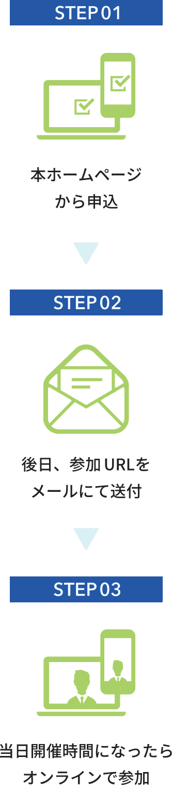
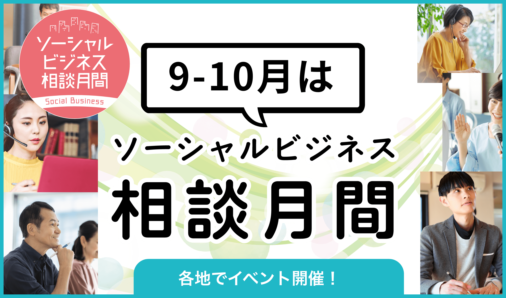

キックオフイベント
〜実践者のストーリー〜
本イベントでは、支援機関や事業者の方より、ソーシャルビジネスの事例や事業化のプロセス、社会性と事業性を両立させるためのポイントについて、お伝えします。皆様のご参加をお待ちしております。
これから地域や社会の課題解決にビジネスの手法で取り組みたい方
基調講演
ソーシャルビジネスの基本
〜社会起業を成功に導くポイントと事例〜

半澤 節（はんざわ たかし）氏
株式会社ボーダレス・ジャパン ボーダレスアカデミー 代表
1990 年生まれ。宮城県仙台市出身。貧困農家に雇用を創るオーガニックハーブ事業やアパレル事業の経験を経て、シリア難民に安定した仕事と居場所を創るためトルコで起業。帰国後は社会起業家に伴走する起業家バディ・採用人事を歴任し、現在は社会起業のためのソーシャルビジネススクール「ボーダレスアカデミー」代表として事業運営。
ファシリテーターとしてトークセッションにも参加
トークセッション
ソーシャルビジネスの始め方と続け方
壷井 豪（つぼい ごう）氏
株式会社ケルン 代表取締役
1980 年神戸市生まれ。パン職人として国内外で研鑽を積み、2013 年 株式会社ケルン3 代目代表取締役に就任。「知育・食育・教育」を軸に講演や事業承継者の支援も行う。2021 年にフードロス削減と社会的支援を両立する「ツナグパン」を開始し「神戸市SDGs 奨励賞」「アトツギアワードグランプリ」受賞。「シェイク！未来つなぐ会議」発起人としても活動中。

幸脇 啓子（さいのわき けいこ）氏
株式会社あすいく 代表取締役
NHK、文藝春秋などを経て、自身の出産・育児をきっかけに起業。「ママが笑えば、子どもも笑う」をビジョンに、一時保育の検索・予約サービスの「あすいく」を2019 年にローンチ。その後、託児に対する罪悪感という新たな課題を発見し、JR 東日本、西武鉄道などさまざまな企業と連携して、託児の間に子どもたちがワクワクするようなホンモノ体験ができる「体験型保育」を2023 年にスタート。3 児の母。
プログラム
- 18:00〜18:10
オープニング
- 18:10〜18:45
基調講演
ソーシャルビジネスの基本
〜社会起業を成功に導くポイントと事例〜登壇者半澤 節（はんざわ たかし）氏
株式会社ボーダレス・ジャパン ボーダレスアカデミー 代表- 18:45〜18:50
休憩
- 18:50〜19:55
トークセッション
ソーシャルビジネスの始め方と続け方ファシリテーター半澤 節（はんざわ たかし）氏
株式会社ボーダレス・ジャパン ボーダレスアカデミー 代表登壇者壷井 豪（つぼい ごう）氏
株式会社ケルン 代表取締役幸脇 啓子（さいのわき けいこ）氏
株式会社あすいく 代表取締役- 19:55〜20:00
クロージング
申込方法
申込みから視聴までの流れ


アーカイブ配信のお知らせ
後日、当日の模様を記録したアーカイブ動画を公開します。詳細は本ホームページをご確認ください。
注意事項
- Zoomウェビナーを利⽤して開催します。
- 視聴環境によって、ご覧いただけない場合もあります。また、視聴にかかる通信費等は参加者の負担となります。
- 参加者には、開催1週間前を目処に参加URLをお送りしますので、視聴環境をご確認ください。
- 参加URLが届かない場合は、下記事務局までお問い合わせください。
お問い合わせ
運営事務局（運営委託先：株式会社one）
- 受付時間／平日10時〜17時
- 電話／03-6820-9840
- メール／jimukyoku@sb-event2025.com

相談月間中は各地で相談会やセミナーなどを開催します。地域貢献につながる事業をステップアップしたい方はもちろん、これからソーシャルビジネスでの創業をお考えの方も是非ご参加ください。